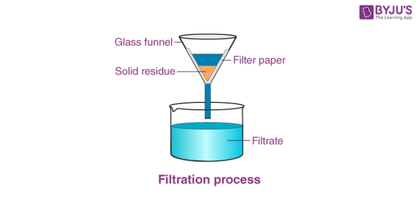

Lọc

Image source: Topic 2 image sources
| Vietnamese | Lọc / Quá trình lọc |
|---|---|
| English | Filtration (noun) / Filter (verb) |
| Pronunciation | /fɪlˈtreɪʃn/ or /fɪlˈtreɪʃən/ |
| Word type | Danh từ / Động từ |
Meaning (Vietnamese)
Phương pháp tách chất rắn khỏi chất lỏng bằng vật liệu lọc (giấy lọc, cột lọc...).
Meaning (English)
A method of separating a solid from a liquid by passing the mixture through a filtering material.
Example
Filtration removes insoluble impurities from a liquid.
Another definition from the notes
Là phương pháp tách chất rắn khỏi chất lỏng bằng cách cho hỗn hợp đi qua vật liệu lọc (giấy lọc, cột lọc…)
A method of separating a solid from a liquid by passing the mixture through a filtering material, such as filter paper or a filter column
Another definition from the notes
Separating insoluble solids using a filter.
Example: Filtration removes insoluble impurities.
Source of information: Topic 2 notes (see Sources)